Generated by ChatGPT on 2025-12-08
本講延續第 1 講對 JoS QUANTUM 平台基礎的介紹，進一步聚焦於：
本講特別強調數學結構與工程實作的對應關係：你將看到每一個 JoS QUANTUM 中的「元件」與「連線」，在數學上對應到什麼樣的線性映射、通道或測量操作；並理解如何利用這套抽象，搭建可重用、可組合的量子模組。
JoS QUANTUM 的一大特點，是使用類似電子電路設計的模組化風格，來建模量子系統。概念上，
在數學層面上，每個元件實現的是一個映射：
JoS QUANTUM 平台讓你可以把這些映射封裝成模組，並像搭積木一樣用 GUI 或程式方式組裝。
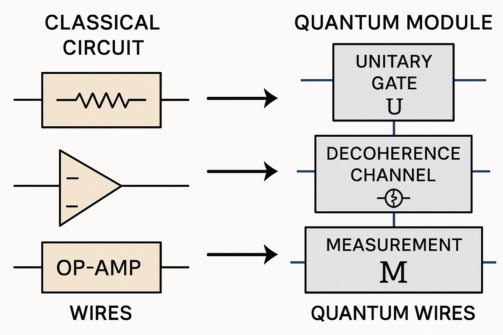
設想一個 \(n\)-qubit 系統，其希爾伯特空間為 \[ \mathcal{H}_n = \bigotimes_{k=1}^n \mathbb{C}^2. \] 在程式層面，我們通常不直接操作 \(2^n \times 2^n\) 的矩陣，而是定義一些「局部操作」：
JoS QUANTUM 中，這些「局部操作」被實現為有明確端口介面（ports）的元件。每一個端口對應到一個（或一組）量子模式，並且傳遞的是：
這樣的設計讓你可以：在不改動電路其他部分的前提下，就替換或升級某一量子元件，對應到數學上更新了某個線性映射 / 超算子。
考慮任一單 qubit 幺正閘 \(U \in U(2)\)。所有單 qubit 幺正矩陣皆可寫成： \[ U = e^{i\alpha} R_{\hat{n}}(\theta) \] 其中 \(R_{\hat{n}}(\theta)\) 是繞 Bloch 球方向 \(\hat{n}\) 旋轉角度 \(\theta\) 的旋轉，形式為 \[ R_{\hat{n}}(\theta) = \exp\left(-i\frac{\theta}{2} \hat{n}\cdot\vec{\sigma}\right), \] \(\vec{\sigma} = (\sigma_x, \sigma_y, \sigma_z)\) 為 Pauli 向量。
若我們選擇傳統的 \(R_z(\phi)\), \(R_y(\theta)\) 分解，可得任意 \(U\) 的 Euler 分解： \[ U(\alpha, \beta, \gamma, \delta) = e^{i\alpha} R_z(\beta) R_y(\gamma) R_z(\delta), \] 其中 \[ R_z(\phi) = \exp\left(-i \frac{\phi}{2} \sigma_z\right) = \begin{pmatrix} e^{-i\phi/2} & 0\\ 0 & e^{i\phi/2} \end{pmatrix}, \] \[ R_y(\theta) = \exp\left(-i \frac{\theta}{2} \sigma_y\right) = \begin{pmatrix} \cos \frac{\theta}{2} & -\sin \frac{\theta}{2}\\ \sin \frac{\theta}{2} & \cos \frac{\theta}{2} \end{pmatrix}. \]
在 JoS QUANTUM 中，這種參數化非常自然地映射到 gate(θ, ϕ, λ) 這類型的可調元件，並能在 GUI 或程式介面上直接修改這些參數。
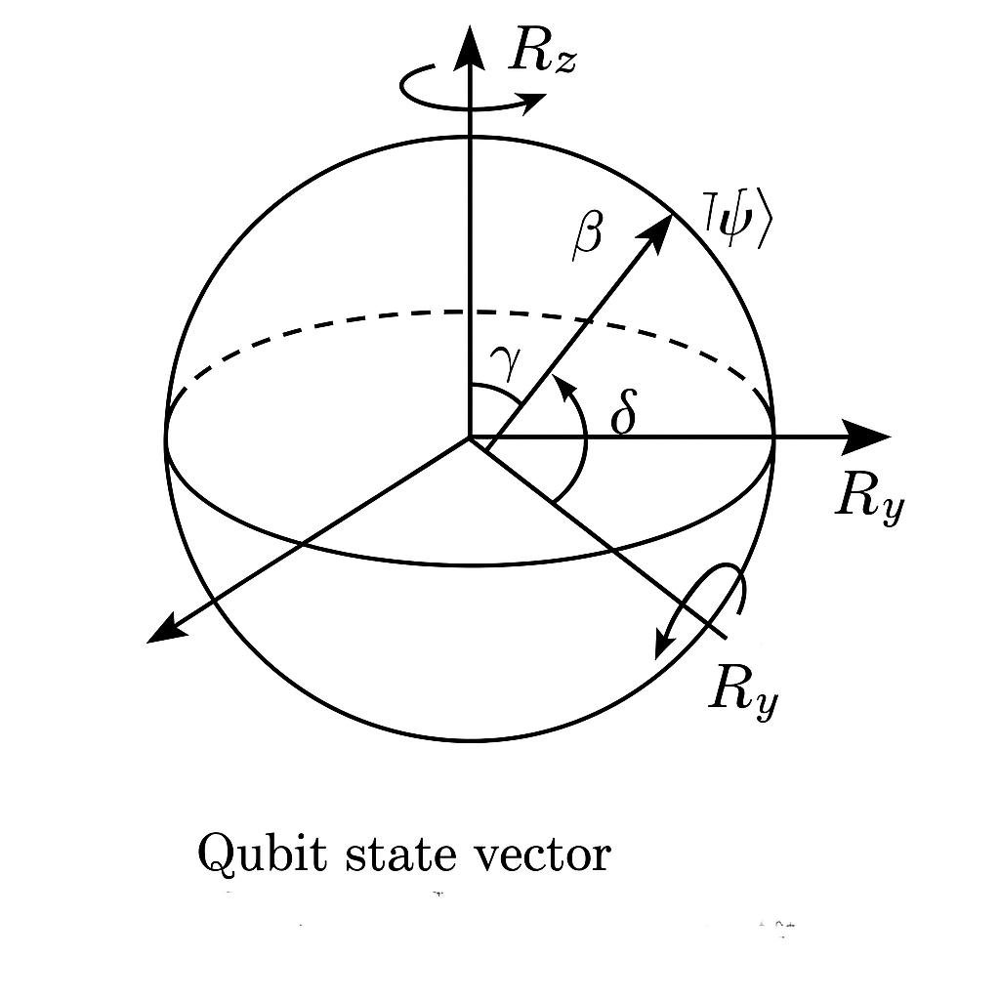
在 JoS QUANTUM 所提供的 Python 接口（或類似 API）中，你通常會看到以下概念化的步驟：
數學上，若整體系統為 \(n\)-qubit，且該閘作用在第 \(k\) 個 qubit，則總體幺正為：
\[ U^{(k)} = \bigotimes_{j = 1}^{n} V_j,\quad V_j = \begin{cases} U, & j = k, \\ I_2, & j \neq k. \end{cases} \]在矩陣實作上，可使用 Kronecker 積實現。JoS QUANTUM 在內部會處理這類張量嵌入；你在高階層通常只需指定：「此元件接到第幾個量子通道（port）」，系統就能在數學上完成對應映射。
考慮 JoS QUANTUM 中一個概念性 Python 介面（下列為教學式偽碼，說明數學對應，非必要與原庫完全一致）：
import numpy as np
from josquantum import QuantumGate
class ParametrizedRz(QuantumGate):
def __init__(self, theta):
super().__init__(num_qubits=1, name="Rz(theta)")
self.theta = theta
def unitary(self):
theta = self.theta
return np.array([
[np.exp(-1j * theta / 2), 0],
[0, np.exp( 1j * theta / 2)]
])
def set_theta(self, theta):
self.theta = theta
數學上這就是 \[ U_{\text{Rz}}(\theta) = \begin{pmatrix} e^{-i\theta/2} & 0\\ 0 & e^{i\theta/2} \end{pmatrix}. \] 若此元件接在整體第 \(k\) 個 qubit 的 port 上，就對應到上述的嵌入 \(U^{(k)}\)。
CNOT 門的標準矩陣（在計算基底 \(\lvert 00\rangle,\lvert 01\rangle,\lvert 10\rangle,\lvert 11\rangle\)）為： \[ \text{CNOT} = \begin{pmatrix} 1 & 0 & 0 & 0\\ 0 & 1 & 0 & 0\\ 0 & 0 & 0 & 1\\ 0 & 0 & 1 & 0 \end{pmatrix}, \] 或等價地描述為邏輯操作： \[ \lvert c, t \rangle \mapsto \lvert c, t \oplus c\rangle. \]
若在 \(n\)-qubit 系統裡，控制位是 \(i\)，目標位是 \(j\)，則幺正演化 \(\text{CNOT}^{(i,j)}\) 可以寫成 projector 形式： \[ \text{CNOT}^{(i,j)} = \Pi_0^{(i)} \otimes I^{(j)} + \Pi_1^{(i)} \otimes X^{(j)}, \] 其中 \(\Pi_0 = \lvert 0\rangle\langle 0\rvert\)、\(\Pi_1 = \lvert 1\rangle\langle 1\rvert\)， 而 \(X\) 是 Pauli-\(X\)。
JoS QUANTUM 的建模會將此抽象成一個「雙端口元件」，透過拓樸（wiring）把它接到第 \(i\) 與第 \(j\) 個量子通道：
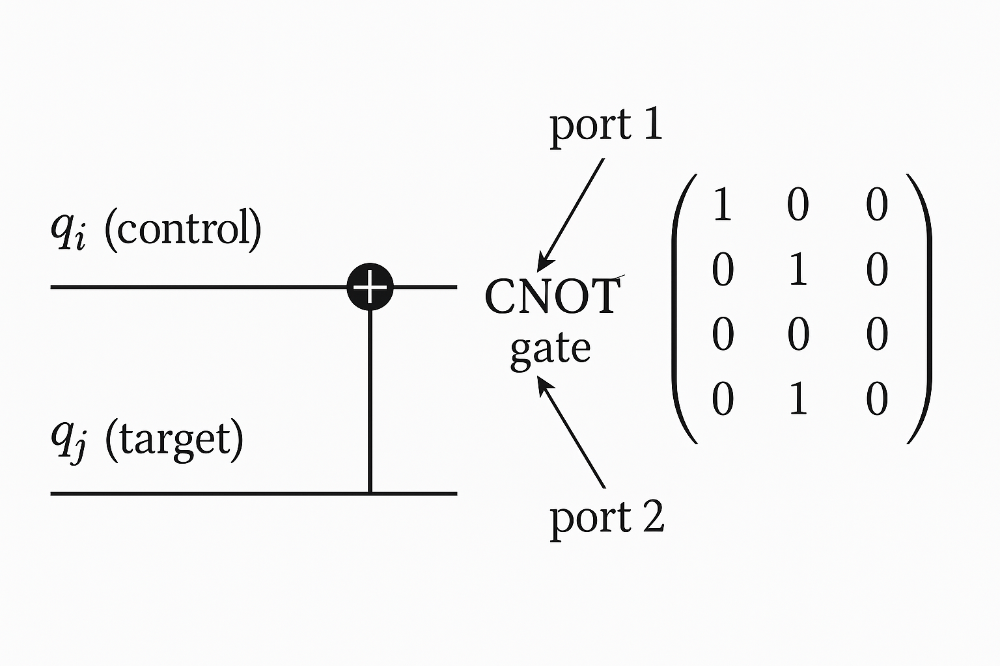
任何兩體幺正 \(U \in U(4)\) 可利用 Cartan 分解（或 KAK 分解）寫為： \[ U = (U_1 \otimes U_2) \exp\left( -i \sum_{k=x,y,z} \alpha_k \, \sigma_k \otimes \sigma_k \right) (V_1 \otimes V_2), \] 其中 \(U_1,U_2,V_1,V_2\in U(2)\)，\((\alpha_x,\alpha_y,\alpha_z)\) 是「局域同構類別」的不變量。
在 JoS QUANTUM 中，你可以：
第二種方式在大系統中更為常見，且更貼近實體裝置（超導量子位元、離子阱等的實際哈密頓量）。
實務操作中，一個常見陷阱是：矩陣的 qubit 排序 vs. 圖形電路上的 qubit 排序並不一定一致。在數學上，我們常使用 \[ \lvert q_{n-1} q_{n-2} \dots q_0 \rangle \] 作為 bit 序，而在軟體或硬體實作中，index 0 有時對應到「最上面」的線，有時是「最下面」。
JoS QUANTUM 提供了一層抽象：qubit index 與 port 拓樸的清楚對應，你應謹守以下原則：
數學上，若系統狀態寫作 \[ \lvert \psi \rangle = \sum_{b_0, \dots, b_{n-1} \in \{0,1\}} c_{b_{n-1}\dots b_0} \lvert b_{n-1} \dots b_0 \rangle, \] 請在文件中明確說明 index 與圖示的對應關係，避免後續錯誤。
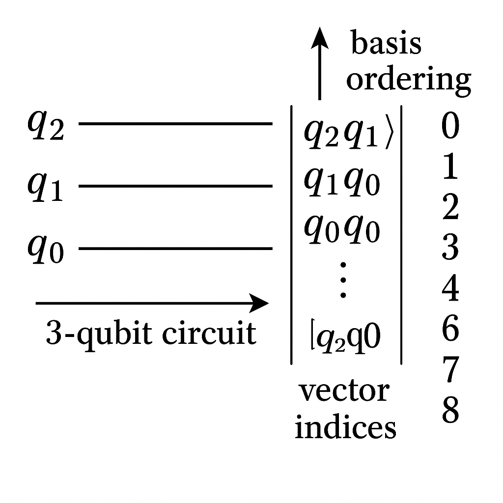
mapping to vector indices, illustrating a potential mismatch between visual ordering (top to bottom) and binary weight (most significant to least).">一個一般的量子通道 \(\mathcal{E}\) 是一個 \[ \mathcal{E} : \mathcal{B}(\mathcal{H}) \to \mathcal{B}(\mathcal{H}) \] 的線性映射，滿足：
Kraus 表示： \[ \mathcal{E}(\rho) = \sum_{k} K_k \rho K_k^\dagger, \quad \sum_{k} K_k^\dagger K_k = I. \]
Choi–Jamiołkowski 表示則透過 \[ J(\mathcal{E}) = (\mathcal{E} \otimes \mathbb{I})(\lvert \Phi^+ \rangle \langle \Phi^+ \rvert), \] 其中 \(\lvert \Phi^+ \rangle = \frac{1}{\sqrt{d}} \sum_{i=0}^{d-1} \lvert i\rangle \otimes \lvert i\rangle\)。
在 JoS QUANTUM 中，這兩種表示都可以成為實作與驗證量子雜訊元件的基礎。
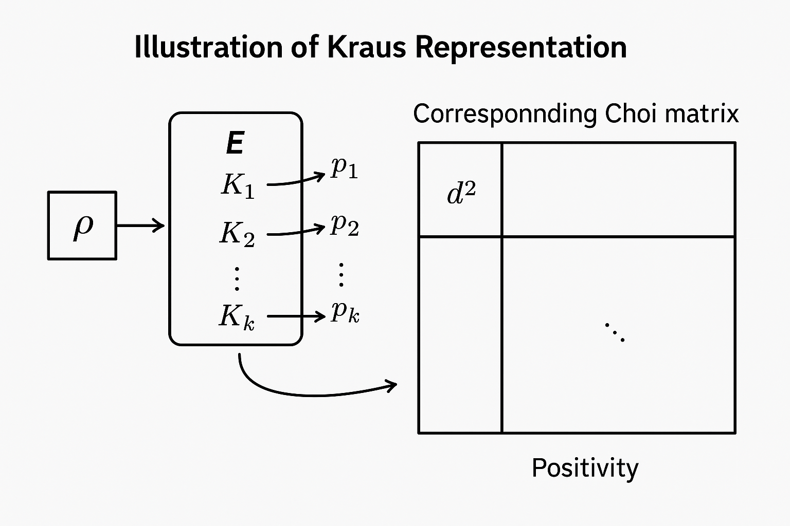
單 qubit 振幅衰減通道（Amplitude Damping, AD）定義為： \[ K_0 = \begin{pmatrix} 1 & 0 \\ 0 & \sqrt{1-\gamma} \end{pmatrix},\quad K_1 = \begin{pmatrix} 0 & \sqrt{\gamma} \\ 0 & 0 \end{pmatrix}, \] \[ \mathcal{E}_{\text{AD}}(\rho) = K_0 \rho K_0^\dagger + K_1 \rho K_1^\dagger. \] 其中 \(\gamma \in [0,1]\) 為衰減機率（可由時間與 \(T_1\) 參數導出）。
JoS QUANTUM 可實作為一個 QuantumChannel 型態元件，偽碼示意：
from josquantum import QuantumChannel
class AmplitudeDamping(QuantumChannel):
def __init__(self, gamma):
super().__init__(num_qubits=1, name="AD(gamma)")
self.gamma = gamma
def kraus_ops(self):
g = self.gamma
K0 = np.array([[1, 0],
[0, np.sqrt(1-g)]], dtype=complex)
K1 = np.array([[0, np.sqrt(g)],
[0, 0]], dtype=complex)
return [K0, K1]
def apply(self, rho):
Ks = self.kraus_ops()
return sum(K @ rho @ K.conj().T for K in Ks)
數學上，可以直接檢查： \[ K_0^\dagger K_0 + K_1^\dagger K_1 = \begin{pmatrix} 1 & 0\\ 0 & 1-\gamma \end{pmatrix} + \begin{pmatrix} 0 & 0\\ 0 & \gamma \end{pmatrix} = I, \] 因此通道是 TP；且由 Kraus 表示可知為 CP。這些條件可作為 JoS QUANTUM 元件在建構時的自動驗證邏輯的一部份。
給定 Kraus 集合 \(\{K_k\}\)，可構造 Choi 矩陣： \[ J(\mathcal{E}) = \sum_{i,j} \lvert i\rangle\langle j\rvert \otimes \mathcal{E}(\lvert i\rangle\langle j\rvert). \] 也可寫成： \[ J(\mathcal{E}) = \sum_k (I \otimes K_k) \lvert \Phi^+ \rangle\langle \Phi^+ \rvert (I \otimes K_k^\dagger). \]
一個映射為 CP 當且僅當 \(J(\mathcal{E}) \succeq 0\)（半正定）。這為 JoS QUANTUM 提供一個直接的數值檢查路徑：
實作時，你可以在元件初始化階段加入這樣的檢查，避免定義出物理上不合法的量子通道。
測量在數學上可抽象為一組 POVM 元素 \(m\)，整個念成「一族 \(M\) 下標 \(m\) 的算符」。-->\(\{M_m\}\)： \(M_m\) 都是半正定矩陣，也就是說 \(M_m\) 大於等於零，而且所有的 \(M_m\) 加起來要等於單位算符 \(I\)。-->\[ M_m \succeq 0, \quad \sum_m M_m = I. \] 對於 projective measurement（射影測量），每個 \(M_m\) 是 projector \(P_m\)，且 \[ P_m P_{m'} = \delta_{mm'} P_m. \]
若初態為 \(\rho\)，則結果 \(m\) 出現的機率與測後狀態為： \[ p(m) = \operatorname{Tr}(M_m \rho), \quad \rho_m' = \frac{\sqrt{M_m} \rho \sqrt{M_m}}{p(m)}. \]
在 JoS QUANTUM 中，一個測量元件通常會有：
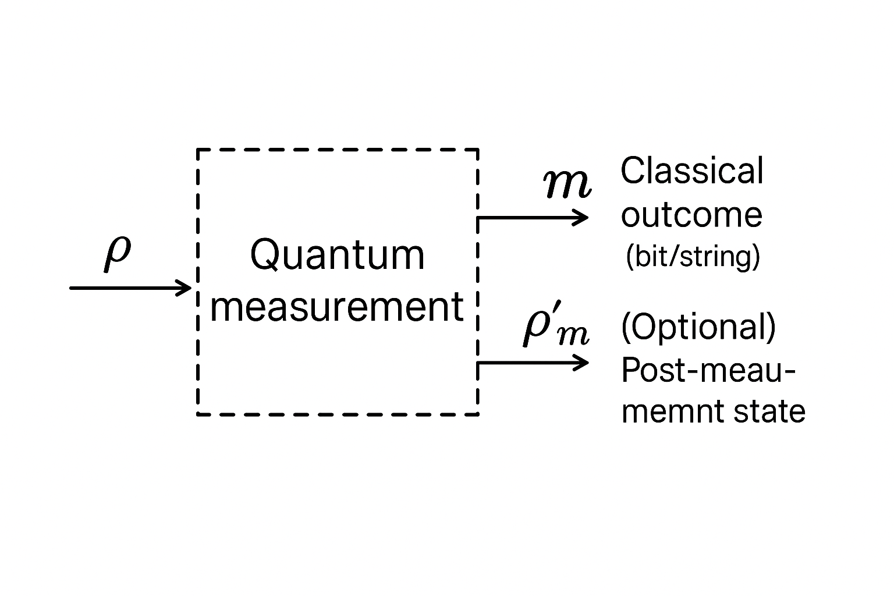
以單 qubit Z-基底測量為例： \[ M_0 = \lvert 0\rangle\langle 0\rvert,\quad M_1 = \lvert 1\rangle\langle 1\rvert. \] 則 \[ p(0) = \operatorname{Tr}(M_0 \rho) = \langle 0\rvert \rho \lvert 0\rangle,\quad p(1) = \operatorname{Tr}(M_1 \rho) = \langle 1\rvert \rho \lvert 1\rangle. \]
在 JoS QUANTUM 的偽碼表達可能為：
from josquantum import QuantumMeasurement
class ZMeasurement(QuantumMeasurement):
def __init__(self):
super().__init__(num_qubits=1, name="Z-meas")
def measure(self, rho):
# probabilities
p0 = np.real(rho[0, 0])
p1 = np.real(rho[1, 1])
outcome = np.random.choice([0, 1], p=[p0, p1])
# post-measurement state
if outcome == 0:
M = np.array([[1, 0], [0, 0]], dtype=complex)
else:
M = np.array([[0, 0], [0, 1]], dtype=complex)
rho_post = M @ rho @ M.T.conj()
rho_post /= (p0 if outcome == 0 else p1)
return outcome, rho_post
許多量子演算法（例如 teleportation、error correction）需要根據測量結果進行經典控制，例如：
在 JoS QUANTUM 的架構中，這可以用
數學上，這相當於做了一個條件通道： \[ \mathcal{E}_{\text{cond}}(\rho) = \sum_m \mathcal{R}_m\!\left( \sqrt{M_m} \rho \sqrt{M_m} \right), \] 其中 \(\mathcal{R}_m\) 是對應於結果 \(m\) 的 recovery/控制操作。JoS QUANTUM 幫你管理這種測量結果到後續元件配置的映射。
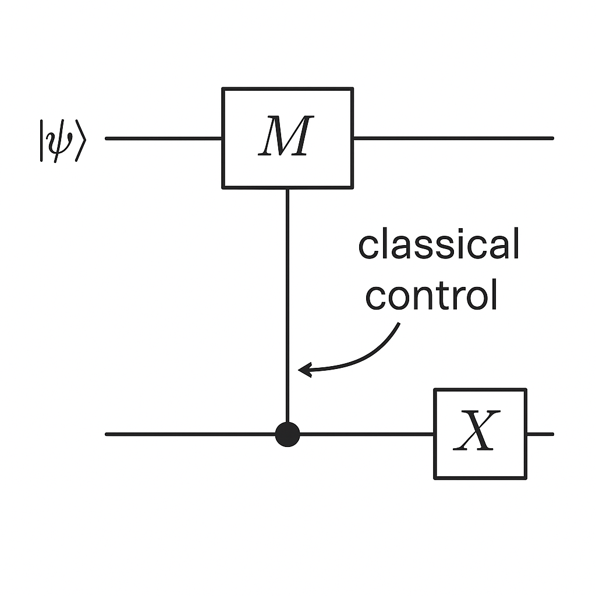
考慮以下簡單但具代表性的流程：
理論上，若無雜訊，步驟 1–3 會得到 Bell 態 \[ \lvert \Phi^+ \rangle = \frac{1}{\sqrt{2}}(\lvert 00\rangle + \lvert 11\rangle). \] 加入振幅衰減後，我們可分析最終密度矩陣與測量分佈。
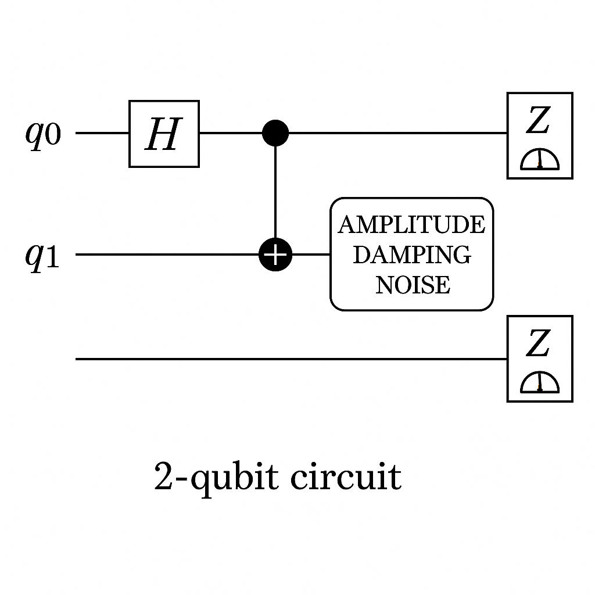
起始狀態： \[ \lvert \psi_0 \rangle = \lvert 00\rangle. \] 施加 \(H\) 於第一 qubit： \[ H \otimes I \lvert 00\rangle = \frac{1}{\sqrt{2}}(\lvert 00\rangle + \lvert 10\rangle) = \lvert \psi_1 \rangle. \] 施加 CNOT（控制：qubit 0，目標：qubit 1）： \[ \text{CNOT} \lvert 00\rangle = \lvert 00\rangle,\quad \text{CNOT} \lvert 10\rangle = \lvert 11\rangle, \] 所以 \[ \lvert \psi_2 \rangle = \text{CNOT} \lvert \psi_1 \rangle = \frac{1}{\sqrt{2}}(\lvert 00\rangle + \lvert 11\rangle) = \lvert \Phi^+ \rangle. \]
此時的密度矩陣為： \[ \rho_{\Phi^+} = \lvert \Phi^+ \rangle \langle \Phi^+ \rvert = \frac{1}{2} \begin{pmatrix} 1 & 0 & 0 & 1\\ 0 & 0 & 0 & 0\\ 0 & 0 & 0 & 0\\ 1 & 0 & 0 & 1 \end{pmatrix}. \]
考慮將 AD(\(\gamma\)) 作用在第二個 qubit 上，Kraus 操作為： \[ K_0^{(\text{2nd})} = I \otimes K_0,\quad K_1^{(\text{2nd})} = I \otimes K_1. \] 前述單 qubit Kraus： \[ K_0 = \begin{pmatrix} 1 & 0\\ 0 & \sqrt{1-\gamma} \end{pmatrix},\quad K_1 = \begin{pmatrix} 0 & \sqrt{\gamma}\\ 0 & 0 \end{pmatrix}. \]
對 Bell 態密度矩陣應用通道： \[ \rho' = \mathcal{E}_{\text{AD on qubit 2}}(\rho_{\Phi^+}) = \sum_{k=0,1} K_k^{(\text{2nd})} \rho_{\Phi^+} (K_k^{(\text{2nd})})^\dagger. \]
具體計算（以 \(\lvert 00\rangle,\lvert 01\rangle,\lvert 10\rangle,\lvert 11\rangle\) 順序）：
所以 \[ \rho' = \rho_0' + \rho_1', \] 其中 \[ \rho_0' = K_0^{(\text{2nd})} \rho_{\Phi^+} (K_0^{(\text{2nd})})^\dagger = \frac{1}{2} \begin{pmatrix} 1 & 0 & 0 & \sqrt{1-\gamma}\\ 0 & 0 & 0 & 0\\ 0 & 0 & 0 & 0\\ \sqrt{1-\gamma} & 0 & 0 & 1-\gamma \end{pmatrix}, \] \[ \rho_1' = K_1^{(\text{2nd})} \rho_{\Phi^+} (K_1^{(\text{2nd})})^\dagger = \frac{1}{2} \begin{pmatrix} 0 & 0 & 0 & 0\\ 0 & 0 & 0 & 0\\ 0 & 0 & \gamma & 0\\ 0 & 0 & 0 & 0 \end{pmatrix}. \]
因此總態為： \[ \rho' = \frac{1}{2} \begin{pmatrix} 1 & 0 & 0 & \sqrt{1-\gamma}\\ 0 & 0 & 0 & 0\\ 0 & 0 & \gamma & 0\\ \sqrt{1-\gamma} & 0 & 0 & 1-\gamma \end{pmatrix}. \] 當 \(\gamma=0\) 時恢復到 \(\rho_{\Phi^+}\)；當 \(\gamma=1\) 時退化成 \[ \rho'_{\gamma=1} = \frac{1}{2} \begin{pmatrix} 1 & 0 & 0 & 0\\ 0 & 0 & 0 & 0\\ 0 & 0 & 1 & 0\\ 0 & 0 & 0 & 0 \end{pmatrix}, \] 對應到經典混合態 \(\frac{1}{2}(\lvert 00\rangle\langle 00\rvert + \lvert 10\rangle\langle 10\rvert)\)。
在 JoS QUANTUM 工具中（以 Python API 為例，仍為教學式偽碼）：
from josquantum import Circuit, HGate, CNOT, AmplitudeDamping, ZMeasurement
# 1. 建立 2-qubit 電路
circ = Circuit(num_qubits=2)
# 2. 加入 H gate on qubit 0
circ.add_gate(HGate(), targets=[0])
# 3. 加入 CNOT with control 0, target 1
circ.add_gate(CNOT(), controls=[0], targets=[1])
# 4. 在 qubit 1 上加入 AD(gamma)
gamma = 0.3
circ.add_channel(AmplitudeDamping(gamma), targets=[1])
# 5. Z-basis measurement on both qubits
circ.add_measurement(ZMeasurement(), targets=[0])
circ.add_measurement(ZMeasurement(), targets=[1])
# 6. 進行多次 shot 的模擬
results = circ.run(shots=10000)
print(results.histogram()) # e.g., {'00': ~0.35, '11': ~0.35, '10': ~0.3}
此模擬結果的統計分佈應與 \(\rho'\) 所預測的機率一致。從 \(\rho'\) 可得：
可作為 JoS QUANTUM 模型的數值驗證基準。
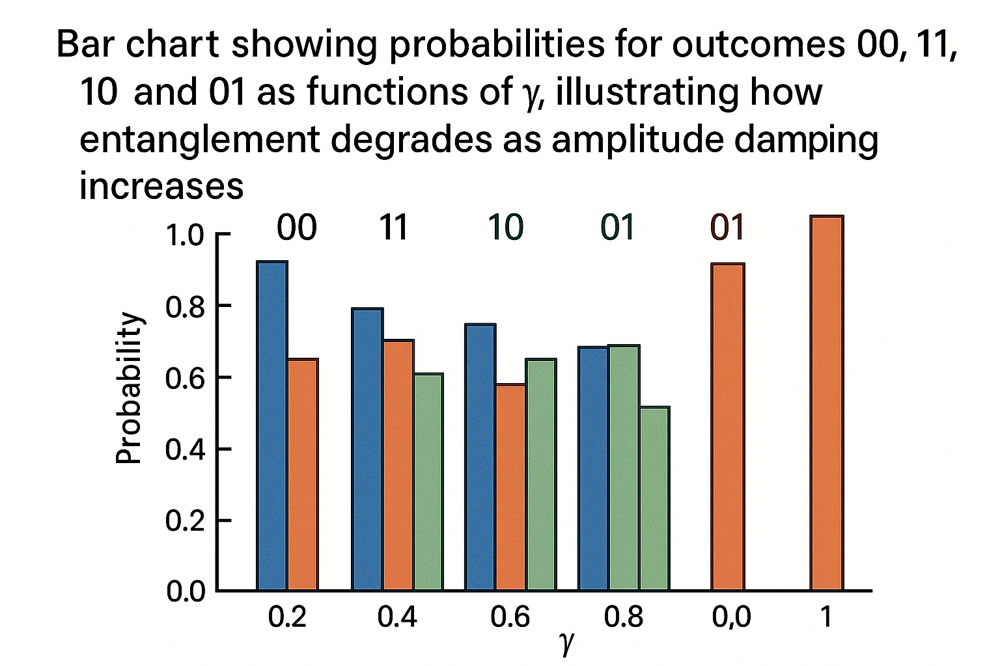
對於 QPE（Quantum Phase Estimation）、VQE（Variational Quantum Eigensolver）等高階演算法，JoS QUANTUM 的模組化優勢特別明顯：
TimeEvolution(H, t)）。Ansatz(θ) 元件，內含一串參數化閘。ExpectationMeasurement(O) 元件。你可以在 JoS QUANTUM 中將這些元件視為「黑盒」，在高階控制層（例如 Python 的優化迴圈）中，反覆調參、讀取結果。
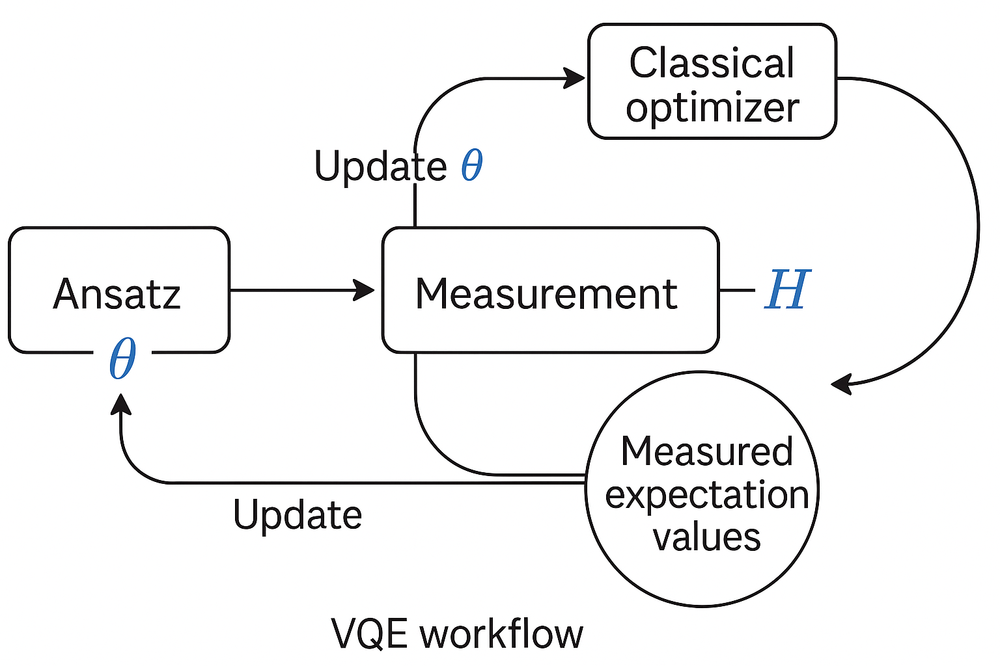
以常見的 hardware-efficient Ansatz 為例： \[ \lvert \psi(\vec{\theta}) \rangle = U_{\text{ansatz}}(\vec{\theta}) \lvert 0\rangle^{\otimes n}, \] \[ U_{\text{ansatz}}(\vec{\theta}) = \prod_{\ell=1}^{L} \left[ U_{\text{ent}}^{(\ell)} \left(\bigotimes_{j=1}^n R_y(\theta_{\ell,j}) R_z(\phi_{\ell,j})\right) \right], \] 其中 \(U_{\text{ent}}^{(\ell)}\) 是某種固定拓樸的糾纏層（如 CZ chain）。
在 JoS QUANTUM，中可以定義一個 AnsatzBlock 元件，其內部：
set_params(θ, φ) 更新參數。
數學上，你可以針對 AnsatzBlock 元件建立：
並在 JoS QUANTUM 的外圍程式中調用這些資訊，形成一套結構化變分計算環境。
在 QPE 中，我們需要實作受控單位演化： \[ \lvert c \rangle \otimes \lvert \psi \rangle \mapsto \lvert c \rangle \otimes \begin{cases} \lvert \psi \rangle, & c=0,\\ U^{2^k} \lvert \psi \rangle, & c=1. \end{cases} \]
若 \(U = e^{-iH\Delta t}\)，則 \(U^{2^k} = e^{-iH 2^k \Delta t}\)。JoS QUANTUM 中可以建立一個元件：
ControlledTimeEvolution(H, Δt, k)。數學上，對於可分解的哈密頓量 \(H = \sum_\alpha h_\alpha P_\alpha\)， \[ e^{-iH\tau} \approx \left( \prod_\alpha e^{-ih_\alpha P_\alpha \tau/r} \right)^{r} + O\left(\frac{\tau^2}{r}\right), \] 可透過增加 Trotter 數 \(r\) 控制誤差；JoS QUANTUM 的元件可將 \(r\) 作為內部參數，並在模擬結果中輸出估計的 Trotter 誤差界限。
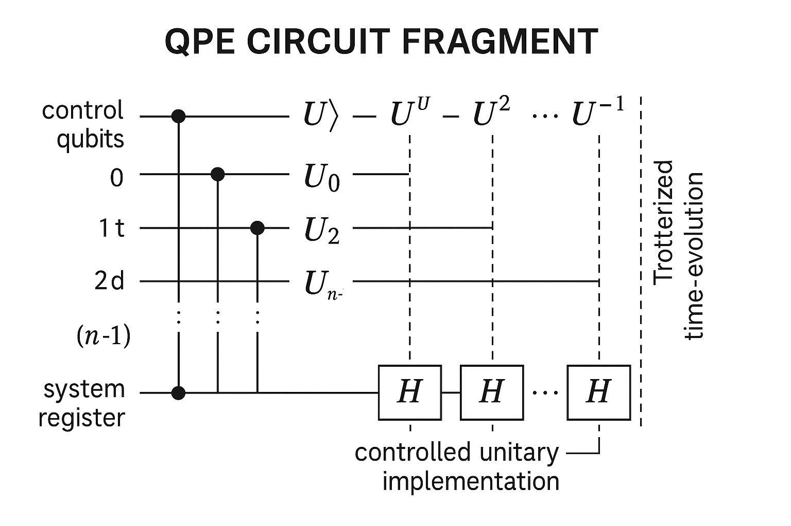
在一個 JoS QUANTUM 建構的量子電路模型中，誤差可能來自：
JoS QUANTUM 可用兩種方式協助控制這些誤差：
延續 2.6 的例子，我們已推導解析密度矩陣 \(\rho'\)。在 JoS QUANTUM 中，可進行如下驗證：
這提供一個對「量子通道元件 + 拓樸接線」之正確性的強有力驗證。
對於 time-dependent Hamiltonian 或多項 Trotter 化，你可以在 JoS QUANTUM 中做：
理論上，Trotter 誤差為 \(O\left(\tfrac{\tau^2}{r}\right)\)，故預期： \[ \langle O \rangle_r = \langle O \rangle_{\infty} + c\frac{1}{r} + O\!\left(\frac{1}{r^2}\right). \]
在 JoS QUANTUM 的情境下，你可以把 r 暴露成元件參數，並自動掃描不同 \(r\) 值，生成誤差收斂曲線，以科學可重現的方式呈現模擬精度。
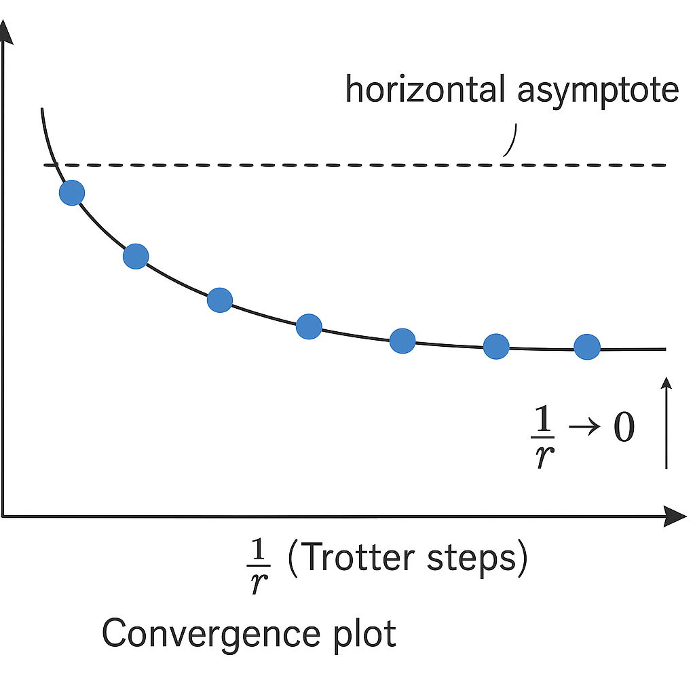
本講從數學與工程雙視角，深入解析了 JoS QUANTUM 平台中「元件化量子電路」的內涵：
在第 3 講中，我們將進一步：
這將把我們從「閘級抽象」進一步推向「連續時間量子動力學」的層次，使 JoS QUANTUM 成為連接理論物理與實驗工程的有力工具。
逐字稿下載：ChatGPT_zh_L02_第_2_講_JoS_QUANTUM量子計算平台主題_2.txt
完整音檔：
Segment 1:
Segment 2:
Segment 3:
Segment 4:
Segment 5:
Segment 6:
Segment 7:
Segment 8:
Segment 9:
Segment 10:
Segment 11:
Segment 12:
Segment 13:
Segment 14: